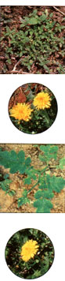
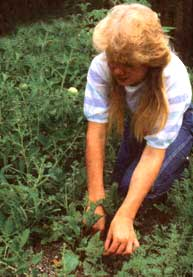
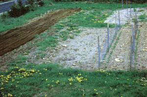
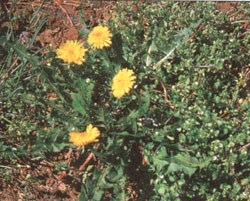
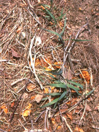
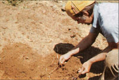
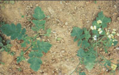
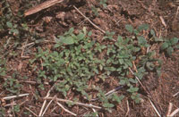
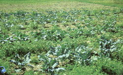

The Summer Garden
Weeds just aren't the nefarious enemy they are cracked up to be, but just in case you are seeing more crabgrass than cucumbers, Mort Mather's "ten-day rule" of weed control will restore the balance of power in your garden.
A weed is "an undesirable plant growing wild, esp. one growing on cultivated ground to the disadvantage of a crop, lawn, or flower bed" (Webster's College Dictionary). So they are really not a specific species of plants but actually any plant that is growing someplace you don't want it to. There are some ornamental plants, for instance, that have escaped into the wild and become terrible weeds. In my neighborhood, something called bamboo and barberry are two shrubs that are currently invading fields, choking roadsides, and crowding out wildlife habitat. According to the above definition, even tomatoes can be weeds. I happen to know a farmer who stopped fertilizing with municipal sludge because of the tomato seeds that came with it. I would have been happy to have a few extra tomato plants around the garden, but I'm not fussy.
When I mention that I'm going to spread cow or horse manure on my garden, someone will usually ask if I won't be bringing in a lot of weed seeds. My answer? Sure. Most likely. So what? My garden is already full of weed seeds. They are on the surface of the ground where they can sprout when the weather is right. They are mixed in the soil where they may be lying in wait for as long as 50 years until I work them to the surface where they can germinate. They are floating in the air. Birds are dropping them. Animals are carrying them in on their fur and on their clothes and on their paws and on their shoes. I plant them with my seeds. They are in my compost pile. Most baffling to some gardeners are the weeds that matured with the plants in my garden in the fall and were left right there all winter.
I figure weed seeds are everywhere. Why fight it? Especially when you consider that they are actually nature's way of bringing the soil into nutrient balance.
The dandelion would seem to be the flag bearer of weeds. It is so undesirable in some people's minds that there have been ordinances passed against it. There are actually neighborhoods where you are breaking the law if you allow dandelions to grow in your yard.
Before I begin my defense of dandelions and then expand it to all weeds, I should explain why some people feel so combative toward them. Ehrenfried E. Pfeiffer wrote Weeds and What They Tell shortly after World War II. The war was fresh in his mind as he wrote chapters titled "The Battle Against Weeds" and "The Biological Combat." The following is from his introduction:
It is true that we should eliminate weeds from our cultivated grounds. But we should also understand why we do it and what we do. Nature has a reason for allowing weeds to grow where we do not want them. If this reason becomes clear to us we have learned from Nature how to deprive weeds of their "weedy" character, that is, how to exclude them from cultivated land or rather how to improve our methods of cultivation, so that we are no more troubled by weeds. However, there is one big handicap: even if the individual tries his best on his acre, there is often an abandoned place, a waste lot, a swamp, a wild area nearby which spoils your land by windblown seed, by seed carried by birds or otherwise transported, notwithstanding all your best intentions. Why now, after the War is won, not spend a tiny fraction of the war expense or reconversion expenses in order to start a nation-wide combat against weeds and insect pests. Only that could help large-scale operations. That would be a valuable and productive unemployment service to the country. I am only afraid politicians would not like the idea for there is no glory in it, only the gratefulness of the farmer and gardener and he has learned to be content with whatever he gets anyway.
It seems a rather bizarre notion to even think about eliminating certain plants from the face of the earth. This was the same time we were trying to eliminate mosquitoes with DDT, so why not plant pests as well? Dr. Pfeiffer really knew better. I think it was just the war that got him off track. There is some good information in his booklet. My copy is a 1976 reprint by the Bio-Dynamic Farming and Gardening Association of Springfield, Illinois.
The more you know about plants, the more ridiculous is the notion of getting rid of any plant that sometimes acts as a weed. Some plants produce seeds that will germinate in different years. That gives the plant a better chance of survival. If the seeds germinating in the first year end up dying from a drought, for example, there will be seeds to sprout the next year and the next, thereby improving the odds of the plant's survival. Many plant seeds stay viable for years in the ground until conditions are right. We aid this process when we turn the soil. We bury the seeds below the level at which they can germinate. Some seeds buried like this can stay viable for as long as 50 years. Imagine the frustration of someone ridding the world of some plant only to have it reappear some time later when someone builds a new road or tills an abandoned field.
More to the point, we shouldn't even want to get rid of any plant. So-called weeds are tremendously valuable even when they are growing in your garden.
Let's start with that scourge of the suburban lawn, the dandelion. First, dandelions are good food. My grandmother got more excited over dandelion greens than anyone else I have known, but they really are good eating. They are especially good early in the spring if you are trying to be vegetable self-sufficient and have been eating mostly potatoes, winter squash, and turnips for the previous month. After a northern winter with few greens, even dandelion greens taste good to me. I like them with vinegar. When you eat them there can be no doubt that they are good for you. That strong flavor is a nutritious blend of protein, calcium, phosphorus, iron, riboflavin, niacin, and vitamins A and C and B1. The young leaves can be cooked or used in salads. The young flower buds can be boiled for a few minutes and served with butter or oil and vinegar. The flowers can be made into wine and the roots into tea. Any questions? The Weed Cookbook by Adrienne Crowhurst (Lancer Books, 1972) has some good answers.
MY GRANDMOTHER got more excited over dandelion greens than anyone else I have known; but they are really good eating.
When I was growing up an only child on a farm before television, dandelions occupied a lot of my time in the spring. Gathering bouquets for my mother and blowing the seeds were great fun, but the science lessons I learned using the stems were truly amazing. I spent hours collect ing and assembling miniature aqueducts. I can still feel the joy of seeing water come out of the end of along pipeline of dandelion stems, especially when it had been made to travel uphill by siphoning.
If you find dandelion flowers to be unattractive, look again. They are one of the first flowers of spring. That beautiful yellow can be nothing short of a reflection of the sun's goodness. I love the yellow flowers complemented by the spring green of our lawn. I wasn't always so philosophically in love with dandelions. The first spring in our house 26 years ago I spent the better part of a day stabbing dandelions below the ground and pulling them. I filled the wheelbarrow twice. I thought I was making a nice lawn. What a waste of time. Much better to enjoy the flowers. Actually, there are fewer of them now that I value them more highly.
Those early flowers are very important to the health of bees in your neighborhood. They need the pollen after a winter without flowers. We gardeners will need the bees later to pollinate some of our crops.
I'm not through with the goodness of dandelions. That tap root of theirs goes deep into the ground, opening up passageways and gathering nutrients which it brings to the surface. It's my guess that the dandelions fertilized my lawn and made it a good place for grass to grow. The grass got stronger and now it is more difficult for the dandelions to get a root hold. Those two wheelbarrow loads of dandelions were a good addition to the compost so that effort wasn't really a waste after all.
When we decide something is one way or another we frequently close our minds to a lot of possibilities. Before Copernicus discovered that the earth was not the center of the universe the calculation of the movement of the heavenly bodies was horrendously difficult. The plots of the movement of the planets in their "movement around the earth" is laughable today. Even though everything fell into place with Copernicus's theory, it was violently disputed for many years.
Of course the reason it took so long to accept the Copernican view of the universe was that man had placed himself in the center and it was a bit of a downer to find that we were elsewhere. If I can con vince you that weeds are, or at least may be, good, it may open up a new world for you.
Weeds do need to be controlled, but should you desire it, the process is really very easy.
I'm going to divide this into a discussion of three different garden situations: 1) the first garden, 2) the annual garden, and 3) the perennial garden. And we'll need some classifications, so stems, grasses, and creepers will do nicely for our purposes. Stems are plants that generally reach the garden as seeds, put down roots, and stay where they started. Some common examples are lamb's quarter, ragweed, pigweed (redroot), and our favorite, the dandelion. Grasses can come into the garden on a tiller blade, as seeds, or by creeping above or below ground. Grasses can re-root easily and, once established, they spread out in an effort to cover the ground. Creepers are also trying to cover the ground and they do it by sending out runners. Ground ivy and morning glories are the examples with which fm most familiar. I include one of the grasses in this group. In Maine it is called witchgrass. It is also known as quack grass, couch grass, wheat grass, quitch grass, Shelly grass, knotgrass, devil's grass, and scutch grass and if you still don't know what fm talking about, its Latin name is Agropyron repens.
The First Garden
The major difference between controlling weeds in the first garden and in later gardens is the grass. No matter how well the sod has been churned, there are bound to be some clumps left. A clump that is covered by soil and out of sight can find a way to push grass leaves to light. A clump on the surface can find a way to push roots down and re-root. You need to keep after them. The longer you allow these clumps of grass to gather energy from the sun and spread their roots, the more difficult it will be to uproot them. You can take time to try to knock all the soil from the roots or you can turn the clump with roots skyward and hope they dry out and die. I recall having persistent clumps that I kept kicking around whenever I was in the garden. They would always seem to find some way to get soil and water and turn their leaves toward the sun. Persistence will win in the end. But if you let the grass become vigorous, you will be turning sod again next spring.
"Why not just cart them away?" someone might ask. Because they are rich in soil nutrients. We want their value in our garden soil.
If your garden spot is covered with stems or creepers, the good news is that you won't have to worry about getting rid of sod. The bad news is that the soil is probably poor. Around new homes you may have grass that really should be stems and creepers. The grass was planted on back fill and fertilized to give you a lawn but the condition of the soil is really weak. Nature would have taken several years to prepare the ground for grass.
I should illuminate. Nature abhors bare ground and will always try to cover it. If the bare ground is fill or some other poor soil, the first things to grow there will be stem or creeper. The creepers bring in nutrients from the surrounding soil. They drop leaves or die, leaving a little fertilizer in their wake, and improving the soil in the process.
The stems come floating in or are dropped by a bird or arrive in some other mystical way. They may germinate and find the soil so inhospitable that they die soon, but even then they have left the soil richer for their having been. Those that can root and grow will force roots down through the poor soil and into subsoil, opening the ground and bringing nutrients to the surface. They also have received energy from the sun, which they leave with the soil. Ultimately this soil becomes rich enough to support grasses. If left to nature it will continue with a mixed growth, ultimately attracting larger plants and possibly developing into a forest. If we come along and mow it, the stems and creepers will have a tough time surviving while the grass will thrive.
The Annual Garden (2-Step Program)
This is a garden that is already established and in which the soil is being turned at least every other year. Most gardens are turned every year but I like to plant my early crops in untilled soil. I can plant my peas, spinach, and early lettuce as soon as the soil is dry enough, maybe a little sooner, because it is not being tilled or spaded over or driven on. I just pull back mulch from the year before and plant. It may be a month later before I hire someone to till the garden. This means I don't have to worry about nature's spring garden because the tiller is going to turn it into green manure.
A Spring Check...
Some weed control takes place during that month but not much. There is only one weed that I am on the lookout for: witchgrass. There is not much chance for it to hide. When I see the green leaves of this grass that propagates through rhizomes, an underground stem, I go digging for the propagators. I love digging in the soil at this time of year after being kept away from that silky texture while it was frozen. I have a four-pronged cultivator that does a good job of pulling the rhizomes but somehow I always end up on my knees with my hands buried.
This spring check isn't much work anymore. The first few years it seemed like I might not win. Don't get the idea that I diligently went after all of the witchgrass I could find. That might have seemed like work. I just do what I feel like doing when I feel like doing it and it seems to work out. When I had a market garden I first chased the witchgrass with a year of cultivation and thereafter kept it from creeping back in from the edges by tilling a swath around the garden several times during the growing season.
Peas, lettuce, and spinach are up and growing by the time I hire someone to till the rest of the garden about three weeks later. There is quite a growth by this time because I left all the weeds that had gotten started from the summer before. The lamb's quarter, ragweed, and pigweed spread many seeds. Dandelion, several kinds of grass, plantain, and other biannual and perennial weeds got a good start and I let them continue. That is what I would have done if I had planted winter rye as a green manure crop. My all-natural green manure crop doesn't look as nice as a planted crop but it serves its purpose at no cost and with no work.
The tilling has seeded the garden to weeds, no question about it. Some of the clumps of grass that were growing will re-root as well. What a mess, some might say. I get to work planting the crops that will germinate in cool soil or transplant those that can stand a light frost. I mulch my walkways. That takes care of the weeds that thought they might sprout there. As I plant, I make note of the dates I worked that patch of soil. I'll be back in ten days to cultivate .
... Followed by the Ten-Day Rule
Ten days after the garden was tilled, I rake the parts that haven't been planted yet. What a weed massacre that is. Thousands, hundreds of thousands, of weeds are put to death. They don't have a chance ten days after they were planted. They are nothing more than a single root going down and a scrawny stem going up. Most people don't even know they are there. You can only see them if you look very closely. The best time to see them is in the early morning when dew clings to them.
If you observe the ten-day rule, you will not be bothered with stem weeds. Don't leave your soil unstirred for more than ten days for the first month after tilling. That is as clear as I can make it. No garden job takes higher priority. When I started market gardening I thought, "If I don't get this stuff planted, I won't get a crop." True, but if I couldn't get the planting to harvest, I wouldn't get a crop either. You can't waste time in a market garden. Planting crops that don't produce is a waste of time. Pulling weeds is also a waste of time. Get them when they are at their most vulnerable and it is an easy job.
The most dramatic example of how well the ten-day rule works occurred the last year I had a market garden. That was the year I began working in earnest on saving the saltwater farm. I got the acre garden planted and cultivated but otherwise neglected it badly. A large plot of carrots was only cultivated once ten days after planting. It had been planted with radish seed mixed with the carrot seed. A month after planting, the radishes were harvested. The patch was not touched again until fall when the carrots were harvested. I would have done more if I had had the time. I wonder how much unnecessary work I do.
The ten-day rule is the only rule in my garden. Everything else is pretty laid-back. Who needs rules unless they make life easier or better? In fact, the first ten-day period is the only one that I really get intense about. After that I am in control.
Mostly I try to get out to the garden a couple of times a week and I usually carry my favorite hoe. My favorite used to be an onion hoe. The blade is four inches wide and less than two inches deep. It is light and easy to manipulate. My current favorite is Danish. I don't know if it has a name but it is also light and easy to handle. A hoe and four-pronged cultivator are pretty much the only tools I use to cultivate once the crops are planted. I use a garden rake for large areas, like around the winter squash, if I am late with the mulch. I have a wheel hoe and a wheel cultivator. Both are good tools but I am usually too lazy to go down to the barn to get them. They were invaluable in the market garden as they cover ground faster, but I'm not in any hurry when I'm in my garden. I like it there.
THE GOLDEN RULE: Don't leave your soil unstirred for more than ten days for the first month after tilling. You'll never be bothered by weeds. No other chore should take higher priority.
Perennial Gardens
I'd really rather not talk about perennial gardens. They are a story of failure for me. This is a case of do as I say rather than as I do. Big bed of strawberries-gone. Two hundred feet of raspberry plantsgone. Eight hundred feet of asparagus bed-stalking the wild asparagus. The first problem was that I didn't take the time to prepare the soil properly. In this case I would have done well to till in the spring, till again in a month and plant buckwheat, till again when the buckwheat began to flower and plant winter rye, then plant, a year after I decided I wanted to plant these crops.
I'd better explain why I would plant green manure crops here instead of letting nature do her thing. The planted green manure crops will reach maturity at a prescribed time. I can schedule the turning under of the buckwheat because I know when it was planted and how long it will take for it to bloom, which is when I want to turn it under. Nature's plants are much less predictable.
Proper preparation of the beds would have helped but it wouldn't have been the whole answer. Weeds seem to be omnipresent. The seeds of the stems and the grasses and the creepers will do their job of trying to cover soil that has been scarred by our cultivation. We need to be there regularly to keep them under control.
I have one asparagus crown next to the barn door. It produces wonderful asparagus from mid-May through June and I visit that plant regularly and keep the weeds down by hand. The only weeds are spring seedlings that are easily dispatched. When I stop harvesting, the asparagus ferns that are left are well able to hold their own against surrounding weeds. Since asparagus is one of my favorite vegetables I am glad that I can still find tender shoots in the overgrown patch. That patch was planted as part of the market garden and I did keep up with it until I was pulled away from market gardening.
It wasn't really weeds that overcame the raspberry patch. For some reason I'm just not into berries so I never figured out what was supposed to be pruned. As I recall I cut out what I thought was the old growth one winter and got next to nothing the next spring.
There is a pick-your-own berry farm near by. He mulches his berries with wood chips and mows between the rows. The plants are held upright with wires. He does such a good job that it hardly seems worthwhile to compete.
If there is a moral to this for me, it's keeping the interruptions of normal garden cycles to a minimum. Nature will continue to work her plan when you stop working yours, and if you learn to enjoy her garden, I think you will enjoy your own much more.
|
My garden in spring with a patch of witchgrass growing strong in the lower right |
 Some say we'd better off without dandelions |
 Digging out a handful of rhizones before they cause trouble |
|
 Mustard weed |
 Pigweed seedlings |
 This is the broccoli and cabbage patchin the market garden. It is not a collection of pretty rows of vegetables but rather a fairly messy-looking place. The harvest was not diminished, however, because the weeds had been kept under control early in the season using the ten-day rule. |
|
 |
 |
 |
|
 |
|
|